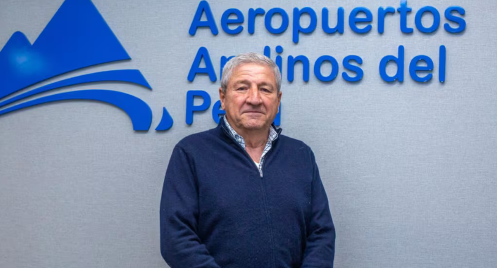
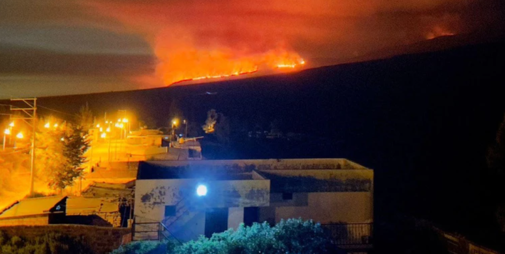
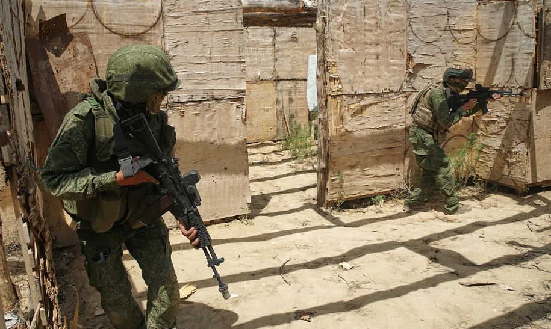
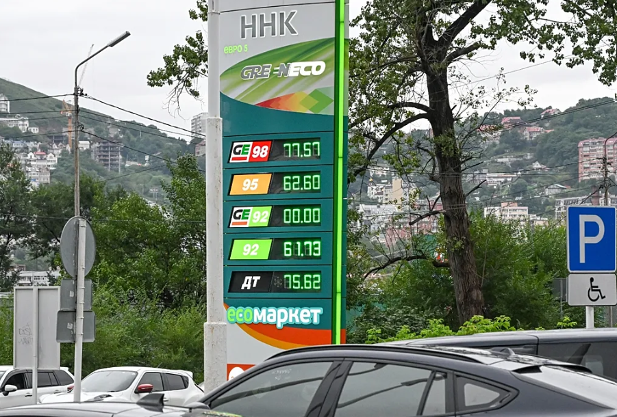

Noticias locales
Aeropuertos al sur del Perú: Así es el megaplan para transformarlos hasta el 2046
En Gestión, valoramos profundamente la labor periodística que realizamos para mantenerlos informados. Por ello, les recordamos que no está permitido, reproducir, comercializar, distribuir, copiar total o parcialmente los contenidos que publicamos en nuestra web, sin autorizacion previa y expresa de Empresa Editora El Comercio S.A.

Fecha de publicacioń: 24/09/2025
Arequipa: al menos 48 hectáreas de área natural fueron arrasadas por un incendio forestal en las faldas del volcán Misti
La emergencia afecta los distritos de Miraflores, Mariano Melgar y Chiguata. La Municipalidad Provincial de Arequipa señaló que este domingo continuarán las labores con brigadas especializadas para sofocar el incendio.

Fecha de publicacioń: 23/09/2025
Noticias internacionales
Guerra Ucrania-Rusia, última hora en directo | Zelenski pidió a Trump misiles Tomahawk
Además de con drones y misiles, la guerra de Ucrania se sigue librando también con palabras. El máximo diplomático ruso acusó a la OTAN y a la Unión Europea de utilizar a Ucrania para declarar una "guerra real" contra su país, en un discurso ante las Naciones Unidas este jueves que el Reino Unido calificó de "distorsiones de un mundo de fantasía falso".

Fecha de publicacioń: 26/09/2025
Las autoridades rusas extendieron la prohibición de exportar gasolina y diésel hasta fin de año
La crisis en el mercado de combustibles se extiende, las refinerías necesitan reparaciones más frecuentes debido a los ataques con drones de las Fuerzas Armadas de Ucrania. El Kremlin ha extendido hasta finales de este año la prohibición vigente sobre la exportación de gasolina y, por el mismo período, introducirá una prohibición sobre la exportación de combustible diésel para no productores.

Fecha de publicacioń: 26/09/2025